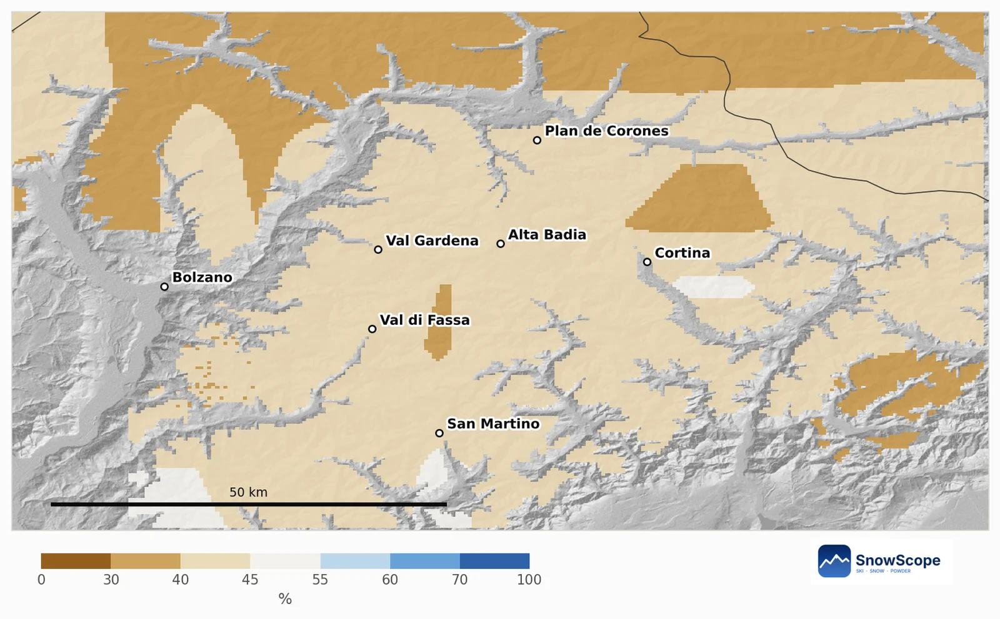

Livigno, la lista: diez cosas prácticas sobre el frío valle alto de Italia
Livigno es fácil de querer y fácil de subestimar. El pueblo está a 1.816 m en un largo valle de Lombardía cerca de la frontera suiza, y hace frío. Un poco de planificación cambia mucho. Aquí van diez puntos prácticos, en el orden en que los necesitarás.
Consulta la previsión de nieve en tiempo real de Livigno en la app SnowScopeEspesor de nieve, alertas de nieve polvo y mapa 3D, gratis.
1. Elige la carretera antes que las fechas
Tres carreteras llevan a Livigno. El puerto del Foscagno, a 2.291 m, la une con el resto de Italia; el túnel Munt la Schera la une con Suiza todo el año; y la Forcola di Livigno, a 2.315 m, solo abre en verano. En invierno quedan dos accesos, ambos de montaña: consulta el estado de las carreteras y lleva cadenas o neumáticos de invierno.
2. Cuenta con frío de verdad
El valle tiene clima subalpino, la mayor parte del invierno se pasa bajo cero y el récord de frío es de −37 °C. Lleva una buena capa intermedia, un braga de cuello y guantes de recambio; en una mañana tranquila de enero el fondo del valle puede estar más frío que las laderas de arriba.
3. Conoce las dos laderas
El esquí se reparte entre dos laderas del valle: Carosello 3000 y Mottolino. Juntas tienen unos 115 km de pistas y 31 remontes. Planea los días por ladera en lugar de cruzar el valle a mediodía.
4. La altura juega a tu favor
Como el pueblo ya está tan alto, la nieve empieza cerca de la puerta. En nuestro modelo de 46 inviernos pasados, el punto más bajo del dominio, a 1.811 m, tiene un máximo habitual de unos 65 cm. A 2.301 m, nuestro punto medio, son unos 116 cm, y cerca de la cima, a 2.791 m, unos 207 cm.
5. Apunta a febrero y marzo
A 2.301 m un invierno típico tiene unos 48 cm de nieve en diciembre, 74 cm en enero, 91 cm en febrero, 96 cm en marzo y 92 cm en abril. Hay al menos 50 cm durante 13 semanas en 9 de cada 10 inviernos: el centro de la temporada es la apuesta más segura.
6. No descartes la primavera
Cerca de la cima la nieve sigue creciendo hasta tarde: abril es el mes con más nieve a 2.791 m, con unos 178 cm en un invierno típico, y hay al menos 50 cm durante 22 semanas en 9 de cada 10 inviernos. En un día de sol primaveral, esquía las pistas altas antes de comer.
7. Cuidado a principios de diciembre
Las pistas bajas son el punto débil. A 1.811 m un invierno típico solo tiene unos 29 cm en diciembre, y en ninguna semana hay 50 cm en 9 de cada 10 inviernos. Los viajes de principio de temporada funcionan mejor si te quedas arriba.
8. Compra, pero conoce las normas
Livigno tiene un estatus libre de impuestos muy antiguo, sin IVA en muchos productos. Se remonta a alrededor de 1840, Italia lo confirmó hacia 1910 y de nuevo en 1960. Si piensas llevarte compras, comprueba antes las franquicias de aduana.
9. Un valle con pasado olímpico
Livigno acogió las pruebas de snowboard y esquí freestyle de los Juegos Olímpicos de Invierno de 2026. Comprueba en la web oficial qué zonas están abiertas.
10. Lee la nieve, no solo el pronóstico
A largo plazo la media montaña es estable aquí: nuestro máximo mediano a 2.301 m era de unos 117 cm en los primeros quince inviernos y de unos 122 cm en los últimos quince, aunque los días con nieve en el suelo bajaron de unos 248 a 230. El invierno pasado, 2025-26, fue flojo, con unos 86 cm a media montaña. Comprueba los remontes en la web oficial y el boletín regional de aludes antes de cualquier día fuera de pista.
Consejos para esquiadores
- Consulta el puerto del Foscagno o el túnel Munt la Schera antes de conducir; la Forcola cierra en invierno.
- Prepárate para el frío intenso: braga, guantes de recambio, capa cálida.
- En viajes de principio de temporada, planea esquiar arriba.
- Nieve en nuestro mapa no significa que una estación esté abierta: comprueba los remontes en la web oficial.
Referencias y créditos
- Wikipedia, 'Livigno', retrieved 8 November 2026: altitude, tax-free status, access roads and tunnel, climate, ski areas, 2026 Winter Olympics. en.wikipedia.org/wiki/Livigno
Sobre estas cifras
Cifras de nieve: histórico de nieve de SnowScope, 46 inviernos pasados (1980-81 a 2025-26) a tres alturas de la estación, un modelo del pasado corregido por altitud (una estimación para una zona, no partes de la estación). Remontes, pistas y acceso: las fuentes de abajo, comprobadas en la fecha indicada.
Boletines oficiales de aludes: AINEVA
Citar este informe
Para investigación, docencia o prensa: cifras y gráficos reutilizables libremente bajo CC BY 4.0 con esta cita.
SnowScope (2026), Livigno, la lista: diez cosas prácticas sobre el frío valle alto de Italia, https://snowscope.app/blog/es/2026/11/livigno-practical-checklist-cold-high-valley-snow.html, consultado el 2026-11-09
SnowScope (Atlas Labs). (2026, November 9). Livigno, la lista: diez cosas prácticas sobre el frío valle alto de Italia. SnowScope snow reports. https://snowscope.app/blog/es/2026/11/livigno-practical-checklist-cold-high-valley-snow.html
BibTeX
@misc{snowscope2026livignopracticalchecklis,
author = {{SnowScope (Atlas Labs)}},
title = {Livigno, la lista: diez cosas prácticas sobre el frío valle alto de Italia},
year = {2026},
month = nov,
howpublished = {\url{https://snowscope.app/blog/es/2026/11/livigno-practical-checklist-cold-high-valley-snow.html}},
note = {Published 2026-11-09 19:48 UTC; accessed 2026-11-09}
}· CC BY 4.0 · Métodos, datos y herramientas →
Livigno: nieve y temperatura según la altura, este invierno vs el pasado (herramientas) →
Sigue Livigno
Gratis: un aviso cuando llega la nieve y la previsión cada mañana.
Más partes de nieve

Un plan barato de 3 días en el lago de Como en diciembre con precios reales 2026-27: trenes, barcos, funicular y esquí en Piani di Bobbio o Madesimo, lo que ahorras frente a Cortina y la probabilidad de nieve en Navidad.

Dónde diciembre de 2026 parece más o menos nevado en los Dolomitas, de Val Gardena a Cortina: la previsión estacional europea, nuestro mapa y las probabilidades de una Navidad blanca.

La nieve de hoy en Cortina, la previsión estacional europea para diciembre y nuestras probabilidades de una Navidad blanca en el este de los Dolomitas.